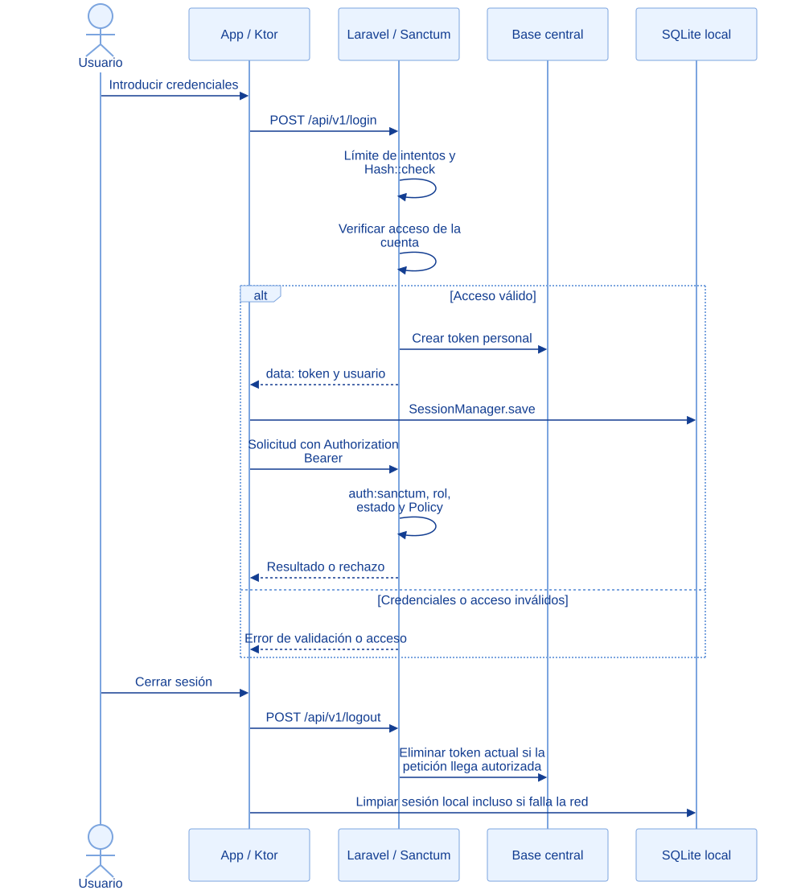

EcoLact / Arquitectura de software
Autenticación y seguridad
Identidad, permisos y contexto de cada operación
Autenticar responde quién realiza la petición; autorizar determina si esa persona puede ejecutar la acción sobre ese recurso. EcoLact aplica ambos controles y añade restricciones de estado de cuenta y asistencia en las rutas correspondientes.
Secuencia de autenticación móvil
La secuencia representa el cliente móvil con token personal. La web Laravel utiliza su sesión web; no se supone que todo acceso Blade use el mismo token Bearer del teléfono.


Consultar la fuente editable
sequenceDiagram
actor U as Usuario
participant A as App / Ktor
participant B as Laravel / Sanctum
participant D as Base central
participant L as SQLite local
U->>A: Introducir credenciales
A->>B: POST /api/v1/login
B->>B: Límite de intentos y Hash::check
B->>B: Verificar acceso de la cuenta
alt Acceso válido
B->>D: Crear token personal
B-->>A: data: token y usuario
A->>L: SessionManager.save
A->>B: Solicitud con Authorization Bearer
B->>B: auth:sanctum, rol, estado y Policy
B-->>A: Resultado o rechazo
else Credenciales o acceso inválidos
B-->>A: Error de validación o acceso
end
U->>A: Cerrar sesión
A->>B: POST /api/v1/logout
B->>D: Eliminar token actual si la petición llega autorizada
A->>L: Limpiar sesión local incluso si falla la red
Autenticación
Login verifica username y contraseña con Hash::check; Sanctum identifica al portador del token en rutas protegidas.
Autorización
RoleMiddleware compara nombres de rol; Gate y Policies verifican el alcance de las acciones sobre los recursos.
Controles implementados
El login aplica un límite de intentos por combinación de usuario e IP, consulta el usuario y valida la contraseña. SesionWeb::errorAcceso verifica que exista un rol válido y que la cuenta pueda acceder. Solo después se actualiza el último acceso y se crea un token Sanctum.
auth:sanctum protege los grupos autenticados. RoleMiddleware devuelve 401 sin identidad y 403 si no tiene un rol permitido. EntregaPolicy, por ejemplo, restringe al proveedor a sus entregas y al acopiador a su zona; Calidad tiene lectura de cualquier zona. El caso de uso conserva las reglas definitivas del negocio.
El estado de cuenta no se resume en “inactivo = sin acceso”. EnsureUserIsActive admite GET/HEAD para cuentas de trabajador o proveedor en modo de solo consulta y rechaza escrituras. Otras cuentas no operativas pierden acceso; el middleware puede revocar el token usado o cerrar la sesión web. Además, las rutas operativas protegidas comprueban asistencia.
Cómo se guarda la sesión móvil actualmente
SessionManager conserva el token y datos de usuario en la tabla SQLDelight session y publica un StateFlow en memoria. restore() recupera esa fila al iniciar la app; HttpClientFactory toma currentToken() para construir la cabecera Bearer.
La columna del token es TEXT. En los drivers y en SessionManager revisados no se implementa cifrado explícito del token ni integración con Keychain o Keystore. No se atribuyen al proyecto esas protecciones ni una renovación automática de token que no se haya comprobado. La existencia de un token local tampoco demuestra que siga autorizado en el servidor.
Cierre de sesión y límites
El logout API elimina currentAccessToken(). La app intenta el logout remoto y luego limpia su sesión local incluso si la petición falla. Por eso cerrar sesión sin red no confirma la revocación remota. Tampoco implica borrar toda la caché o la cola: SessionManager.clear() elimina la fila de sesión, no todas las tablas.
Sanctum resuelve identidad por token; no sustituye Policies, reglas de negocio ni validación de entradas. La configuración de HTTPS y las protecciones del despliegue no se verificaron en esta revisión. Los ejemplos y marcadores de la documentación no contienen secretos ni credenciales reales.
Evidencias de implementación
Las referencias identifican código revisado. El área de imagen está preparada para la captura manual del archivo indicado; el marcador visual no constituye una captura de la implementación.
Inicio de sesión y emisión de token
El controlador comprueba las credenciales y el acceso antes de crear el token personal de Sanctum.

Qué demuestra. Hash::check, la comprobación de acceso y createToken forman parte del login real. La captura debe mostrar código, nunca valores de sesión.
Archivo de imagen: seguridad-sanctum.png · Abrir imagen
Ubicación en GitHub: EcoLactWeb/app/Http/Controllers/Api/AuthController.php
Fragmento sugerido para la captura: líneas 33–52 de la revisión documentada.
Autorización por nombre de rol
El middleware decide si el usuario autenticado pertenece a uno de los roles permitidos.

Qué demuestra. Una identidad válida no basta para acceder a cualquier área: se exige el rol autorizado y se responde 403 cuando falta.
Archivo de imagen: seguridad-roles.png · Abrir imagen
Ubicación en GitHub: EcoLactWeb/app/Http/Middleware/RoleMiddleware.php
Fragmento sugerido para la captura: líneas 17–29 de la revisión documentada.
Fuentes adicionales y alcance de la revisión
Revisión estática del repositorio local: 28 de octubre de 2026. Enlaces a la revisión 75901337489d; la existencia de cada archivo y los fragmentos sugeridos se comprobaron localmente. No se ejecutaron servicios de negocio ni se verificó un despliegue.
- EcoLactWeb/app/Http/Middleware/EnsureUserIsActive.php
- EcoLactWeb/app/Http/Support/SesionWeb.php
- EcoLactWeb/app/Policies/EntregaPolicy.php
- EcoLactWeb/app/Http/Middleware/RequiereAsistencia.php
- EcoLactMobile/shared/src/commonMain/kotlin/pe/edu/upeu/ecolactmobile/core/session/SessionManager.kt
- EcoLactMobile/shared/src/commonMain/sqldelight/pe/edu/upeu/ecolactmobile/core/database/Session.sq
- EcoLactMobile/shared/src/commonMain/kotlin/pe/edu/upeu/ecolactmobile/feature/auth/AuthRepository.kt